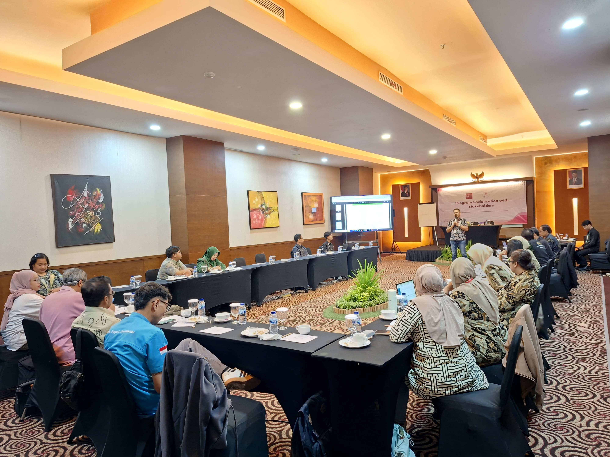

Kegiatan2 April 2026
Yayasan Lentera Perkuat Kolaborasi Stakeholder untuk Meningkatkan Kepatuhan Pengobatan HIV
Yayasan Lentera Surakarta menggelar pertemuan kolaboratif bersama para pemangku kepentingan untuk memperkuat kepatuhan pengobatan HIV...
Selengkapnya